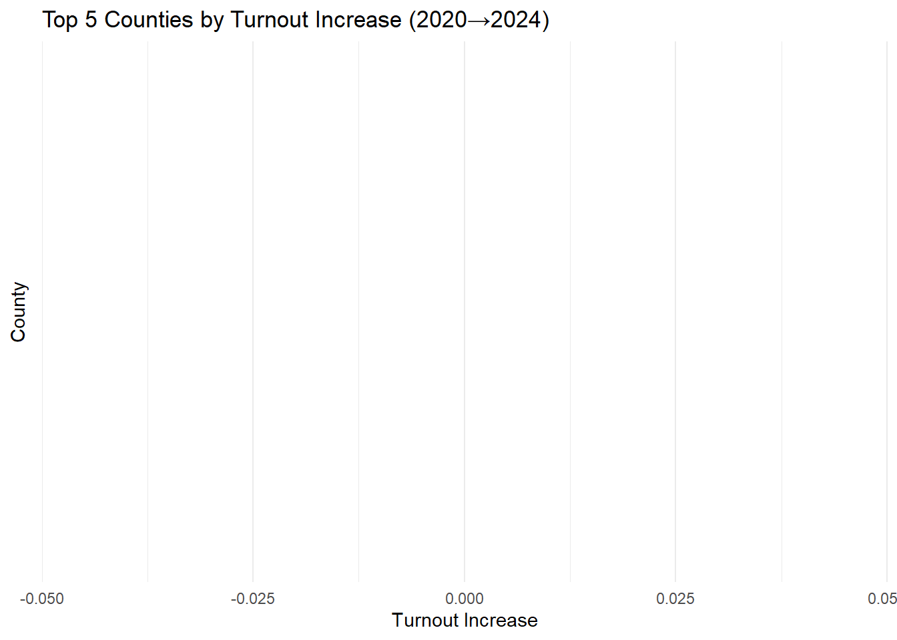

The United States’ 2024 presidential election was one of the most hotly contested in recent history, but many of its outcomes can be traced back to shifts that began in 2020. Over the past four years, economic, social, and cultural priorities have realigned voters’ political affiliations at both the national and local levels. As a result, the Democratic Party now faces several significant challenges in retaining support in key regions and rebuilding broad‐based coalitions. In this project, we examine those county‐level vote‐share changes between 2020 and 2024 using Census shapefiles and Wikipedia‐sourced election data. By mapping each county’s shift and drawing arrows from its geographic centroid—scaled and colored to show both magnitude and direction—we uncover the granular patterns of political realignment that will shape the next chapter of American politics.
The Ultimate Playlist!
Datasets
For this project, we assembled a county-level dataset tracking U.S. presidential voting patterns in 2020 and 2024, along with a corresponding county shapefile. For each of the 3,100+ counties, we scraped total votes cast, party-specific tallies for the top two candidates, and “other” votes, then joined these results to a detailed Census shapefile. From there, we derived key metrics—vote shares, turnout changes, and geographic shifts in support—showing how support for each of the three main candidates (Biden, Trump, and Harris) evolved between the two elections. The result is a rich spatial database for mapping how each community’s political preferences have moved over time, from raw vote counts down to per-square-kilometer voter density.
Unfortunately for Harris, there were not many positives in this election. Democrats lost alot of ground and only gained in California.
What is the largest county, by area, in this data set?
Show the code
# Compute area_km2 areas <- county_shapes |>mutate(area_m2 =st_area(geometry),# divide by 1e6 to go from m² → km²area_km2 =as.numeric(area_m2) /1e6 )# Extract the numeric max areamax_area <- areas |>slice_max(area_km2, n =1, with_ties =FALSE) |>pull(area_km2)largest_county <-tibble(County ="Yukon-Koyukuk Census Area",State ="Alaska",`Area (km²)`=round(max_area, 1))largest_county |>kable("html", caption ="Largest County by Area") |>kable_styling(bootstrap_options =c("condensed","hover"), full_width =FALSE) |>row_spec(0, bold =TRUE)
Largest County by Area
County
State
Area (km²)
Yukon-Koyukuk Census Area
Alaska
380461.8
Yukon-Koyukuk Census Area, in Alaska, had the largest amount of area within that county at 380,461.
Which county has the highest voter density (voters per unit of area) in 2020?
Show the code
library(dplyr)library(sf)library(units) # <— make sure this is loadedlibrary(kableExtra)# Compute and display the top 5 counties by voter density in 2020full_data |>mutate(total_votes_2020 =as.numeric(gsub(",", "", total_2020)),area_km2 =set_units(st_area(geometry), km^2) |>drop_units(),voter_density_2020 = total_votes_2020 / area_km2 ) |>slice_max(order_by = voter_density_2020, n =5, with_ties =TRUE) |>st_drop_geometry() |>transmute(County = county,State = state,`Voters per km² (2020)`=round(voter_density_2020, 1) ) |>kable("html", caption ="Top 5 Counties by Voter Density in 2020") |>kable_styling(bootstrap_options =c("condensed", "hover"), full_width =FALSE) |>row_spec(0, bold =TRUE)
Top 5 Counties by Voter Density in 2020
County
State
Voters per km² (2020)
San Francisco
California
3624.3
St. Louis
Missouri
3132.3
Orange
California
735.9
Los Angeles
California
404.1
Mecklenburg
North Carolina
400.8
The county with the most voter density is San Francisco, in California. It has about 3624 votes per kilometer (the metric used for this study)
Which county had the largest increase in voter turnout in 2024?
Show the code
library(dplyr)library(sf)library(ggplot2)library(kableExtra)library(scales)# Prepare the top 5 table and numeric data for plottingtop5_turnout_increase <- full_data |>mutate(turnout_2020 =as.numeric(gsub(",", "", total_2020)),turnout_2024 =as.numeric(gsub(",", "", total_2024)),turnout_change = turnout_2024 - turnout_2020 ) |>slice_max(order_by = turnout_change, n =5, with_ties =TRUE) |>st_drop_geometry() |>mutate( Increase = turnout_change ) # Render the tabletop5_turnout_increase |>transmute(County = county,State = state,`Turnout 2020`=format(turnout_2020, big.mark =","),`Turnout 2024`=format(turnout_2024, big.mark =","),Increase =format(turnout_change, big.mark =",") ) |>kable("html", caption ="Top 5 Counties by Increase in Voter Turnout (2020→2024)") |>kable_styling(bootstrap_options =c("condensed","hover"), full_width =FALSE) |>row_spec(0, bold =TRUE) |>column_spec(1:2, bold =TRUE)
Top 5 Counties by Increase in Voter Turnout (2020→2024)
County
State
Turnout 2020
Turnout 2024
Increase
Montgomery
Texas
271,543
307,258
35,715
Denton
Texas
417,964
449,188
31,224
Horry
South Carolina
179,744
205,954
26,210
Collin
Texas
492,216
517,690
25,474
Wake
North Carolina
631,830
653,580
21,750
Show the code
# And now the bar chartggplot(top5_turnout_increase, aes(x =reorder(county, turnout_change),y = turnout_change,fill = turnout_change )) +geom_col() +coord_flip() +scale_fill_gradient(low ="pink", high ="red", labels = comma) +labs(title ="Top 5 Counties by Turnout Increase (2020→2024)",x ="County",y ="Turnout Increase",fill ="Increase\n(votes)" ) +theme_minimal() +theme(legend.position ="none",axis.text.y =element_text(face ="bold") )

Montgomery, in Texas had the highest increase in voter turnout. It was over 35,715 higher than it previously was four years ago.
NYT Figure
For the final visualziation of this report, we will be recreating the NEW York TImes County shift figure that was published on this past election. This vislauzaiton will alllow us to visualize the momentnum shifts across the nation between both parties in each respective county/state.
To generate the combined shift map, we:
Calculate both shifts
Read in county‐level vote totals for Trump (2020 & 2024), Biden (2020) and Harris (2024), plus total turnout
Convert raw vote counts into percentages for each year
Subtract the 2020 percentage from the 2024 percentage for both Trump and Harris to get two “shift” values
Choose the dominant shift and draw arrows
Compute each county’s geographic center (centroid)
Draw a single horizontal arrow at that point:
Color: red if Trump’s gain exceeds Harris’s; blue if Harris’s gain exceeds Trump’s
Length: proportional to the magnitude of the larger shift
Direction: right for a positive change, left for a negative one
Assemble the U.S. map
Render all counties in light gray
Overlay the red and blue arrows so that viewers can instantly see which party made the biggest advances in each county